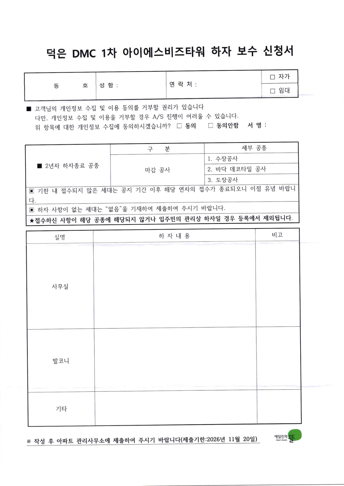

덕은DMC 아이에스비즈타워
2년차 하자보수 신청서
임대인 (주)필로스해운 안내
제출 마감2026년 11월 20일(금)
이렇게 제출해 주세요
- 아래 신청서를 내려받거나 인쇄합니다. 우편함에 들어 있는 양식을 쓰셔도 됩니다.
- 동호, 성함, 연락처를 쓰고 임대에 체크한 뒤 서명합니다.
- 실(사무실, 발코니, 기타)별로 하자 내용을 씁니다. 하자가 없으면 '없음'이라고 씁니다.
- 관리실에 직접 내거나 입구 전용박스에 넣습니다.
하자 부위는 사진을 찍어 두시고, 제출한 신청서도 사진으로 남겨 주세요.
신청서

이미지를 누르면 크게 볼 수 있습니다.

접수처
관리사무소02-3158-3005
아이에스동서 CS관리팀
(전유부분 하자 신청·문의)02-6730-5974
(전유부분 하자 신청·문의)02-6730-5974
급한 하자는 전화로도 접수할 수 있습니다. 서면 제출도 함께 해 주세요.